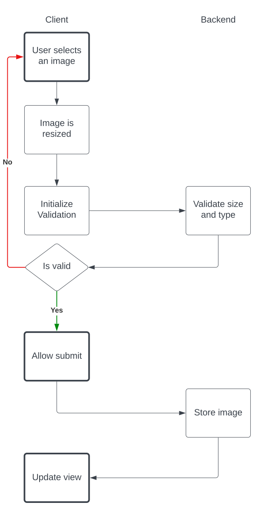
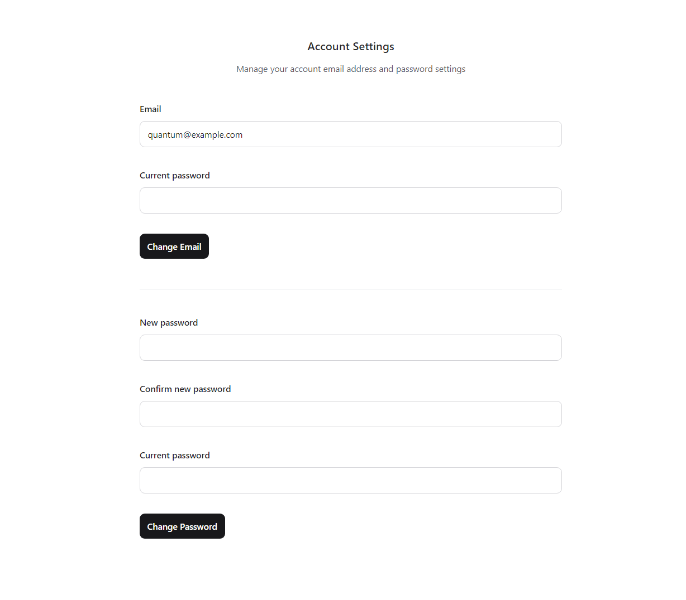
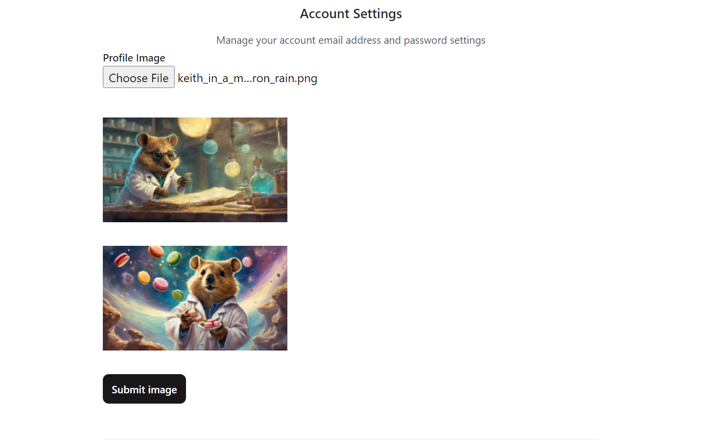

In this article we will see how to resize an image before uploading it to a Phoenix backend. We will do this by adding a profile image to the user in a basic Phoenix setup. This will take us through the process of modifying an existing schema, create and run a migration, write custom hooks, add file validation, and ultimately create a new file. So if you are up for the task and would like to follow along, here’s the resize/upload flow:

Prerequisites and Setup
- Docker
- Elixir
- Mix
Run a postgres container:
docker run --name phoenix_db -e POSTGRES_PASSWORD=phoenix_pwd -e POSTGRES_USER=phoenix_usr -d -p 5432:5432 postgres
If you do not have a Phoenix application, run:
mix phx.new my_app
If
phx.newis not a recognized mix-command, install the command withmix archive.install hex phx_new. At the time of writing, this will install version1.7.10.
Setup the application to use the correct database credentails in ./config/dev.exs. Adjust in the top of the file so it corresponds with your docker container setup:
# …
# Configure your database
config :my_app, MyApp.Repo,
username: "phoenix_usr",
password: "phoenix_pwd",
hostname: "localhost",
database: "my_app_dev",
stacktrace: true,
show_sensitive_data_on_connection_error: true,
pool_size: 10
# …
With database configuration ready we can set up the database with mix ecto.create. We will then add a Phoenix LiveView authentication system by first running mix phx.gen.auth Accounts User users. And then run mix ecto.migrate.
Modify the User schema
We will have a profile image added to our new User model. The user will only ever have one of these and we will not preserve any kind of history beyond what the user currently has as their profile image. We plan to add a string field to the User model and schema to store the path for the image. Let’s create a migration file for this.
From the CLI we run mix ecto.gen.migration add_profile_image.
This creates a new file priv/repo/migrations/[timestamp]_add_profile_image.exs with the backbone for a migration-change. We will alter the table for users by adding a new field:
defmodule ArchAngler.Repo.Migrations.AddProfileImage do
use Ecto.Migration
def change do
alter table(:users) do
add :profile_image, :string
end
end
end
Next we will run this migration with mix ecto.migrate.
Having updated the database schema for the users table, we now turn to update our model accordingly. The model is defined in ./lib/my_app/accounts/user.ex. Let’s adjust the schema:
defmodule MyApp.Accounts.User do
# …
schema "users" do
# add the profile_image field here
field :profile_image, :string
timestamps()
end
#...
# add a new changeset function for the new field by the end of the module:
@doc """
A User changeset for updating Profile Image
"""
def profile_image_changeset(user, attrs, _opts \\ []) do
user
|> cast(attrs, [:profile_image])
end
end
With the updated User model, we should update the context as well. We find it in ./lib/my_app/accounts.ex. Add the following function to the module:
@doc """
Returns an `%Ecto.Chageset{}` for updating the user profile_image.
"""
def change_profile_image(user, attrs \\ %{}) do
User.profile_image_changeset(user, attrs)
end
def update_profile_image(%User{} = user, attrs) do
user
|> User.profile_image_changeset(attrs)
|> Repo.update()
end
This will be used to create a form for the LiveView component.
Update User Settings page
With updates to the User model, we can now update the LiveView component for the User Settings page. Currently the view has two forms: One for changing Email, and another for changing Password. We will add a new form for uploading and changing the Profile Image.

We will find the LiveView component in ./lib/my_app_web/live/user_settings_live.ex. In its render function, we will add our new form. Insert the following code above the email-form.
<div>
<div id="image-uploader-container">
<label>
<div class="block text-sm font-semibold leading-6 text-zinc-800">Profile Image</div>
<input
id="profile-image-uploader"
type="file"
accept="image/png, image/jpeg, image/jpg, image/webp"
phx-hook="Resize"
/>
</label>
<%= if @image_error do %>
<p class="text-red-500"><%= @image_error %></p>
<% end %>
</div>
<.simple_form
for={@image_form}
id="profile_image_form"
phx-submit="update_profile_image"
phx-change="validate_profile_image"
>
<%= if @profile_image do %>
<img src={@profile_image} alt="Profile Image" />
<% end %>
<div class="">
<div id="image-preview-container">
<%= if @resized_image_src do %>
<img src={@resized_image_src} alt="preview resized image" />
<% end %>
</div>
</div>
<.input
id="profile-image-src-input"
field={@image_form[:profile_image]}
type="hidden"
value={@resized_image_src}
required
/>
<:actions>
<%= if @allow_image_upload do %>
<.button phx-disable-with="Changing..." id="submit-image-btn" class="">
Submit image
</.button>
<% end %>
</:actions>
</.simple_form>
</div>
<%!-- below is Email-form --%>
Couple of things to note here: we are currently referring to Phoenix functions and socket assignments that currently do not exist. We are missing these functions in the LiveView component:
validate_profile_image, which will be called for every change in the form.
update_profile_image, which will be called upon form-submit.
The following socket assignments are missing:
image_form, a form-map that holds the field we want to parse.
image_error, a variable that we will add an error message to, if needed.
profile_image, a variable that will hold the current profile image.
resized_image_src, will hold a data URL of a resized image if validated.
allow_image_upload, will be false until validated.
On top of these Elixir-related changes, we will also make use of LiveView’s JavaScript Interoperability capabilities via its hooks. We will need a Resize hook, which will be responsible to resize an image to within specified parameters, and once that is done, it will update the value of the hidden input field.
Let’s start with the Elixir updates in the LiveView component (user_settings_live.ex). We will add the assignments first. These are added into the second mount function of the component:
def mount(_params, _session, socket) do
user = socket.assigns.current_user
email_changeset = Accounts.change_user_email(user)
password_changeset = Accounts.change_user_password(user)
# Let’s get the changeset for the image
profile_image_changset = Accounts.change_profile_image(user)
socket =
socket
|> assign(:current_password, nil)
|> assign(:email_form_current_password, nil)
|> assign(:current_email, user.email)
|> assign(:email_form, to_form(email_changeset))
|> assign(:password_form, to_form(password_changeset))
|> assign(:trigger_submit, false)
# Our new assigns are added here
|> assign(:image_form, to_form(profile_image_changset))
|> assign(:image_error, false)
|> assign(:profile_image, user.profile_image)
|> assign(:resized_image_src, false)
|> assign(:allow_image_upload, false)
{:ok, socket}
end
Next up would be adding the event handlers for validate_profile_image and update_profile_image. But for the validation part it would be best to have a separate module that can validate by file size and type. This module’s validate function can then be called in our LiveView component. Create the file ./lib/my_app/image_validator.ex with the following content:
defmodule MyApp.ImageValidator do
def validate_image(data_url, allowed_file_size, allowed_file_types)
when is_binary(data_url) and is_integer(allowed_file_size) and is_list(allowed_file_types) do
# Extract the media type and the base64 part from the data_url
[meta_data, base64] = String.split(data_url, ",")
[media_type, _] = String.replace(meta_data, "data:", "") |> String.split(";")
# Decode the base64 part and get the binary data
binary_data = Base.decode64!(base64)
# Get the file size in bytes
file_size = byte_size(binary_data)
# Get the file extension from the media type
file_ext = String.split(media_type, "/") |> Enum.at(1) |> String.replace_suffix("", "")
# Check if the file extension is allowed
case Enum.member?(allowed_file_types, file_ext) do
true ->
# Check if the file size is less than or equal to 2MB
case file_size <= allowed_file_size do
true ->
{:ok, data_url}
false ->
# Return an error message for invalid file size
{:error, "Image size must be less than or equal to #{allowed_file_size}"}
end
false ->
# Return an error message for invalid file extension
{:error, "Image file type must be jpg, jpeg, png, or gif"}
end
end
end
Let’s write out our event handler for validate_profile_image back in user_settings_live.ex:
def handle_event(
"validate_profile_image",
%{"user" => %{"profile_image" => profile_image}},
socket
) do
case MyApp.ImageValidator.validate_image(profile_image, 2 * 1024 * 1024, ~w(jpg jpeg gif png webp)) do
{:ok, data_url} ->
{:noreply,
socket
|> assign(resized_image_src: data_url, allow_image_upload: true, image_error: false)}
{:error, message} ->
{:noreply, socket |> assign(allow_image_upload: false, image_error: message)}
end
end
We can see how we are using pattern matching to unpack profile_image from the incoming parameters variable. This data is passed into the validate_image function, along with the maximum allowed file size (2MB) and allowed file types. As the function returns either an ok atom along with the image data, or an error and message, we will adjust the socket assignments accordingly.
Now, let’s add the event handler for update_profile_image in the same user_settings_live.ex, along with two helper functions:
def handle_event(
"update_profile_image",
%{"user" => %{"profile_image" => profile_image}},
socket
) do
# Make sure that the image data is still valid
case MyApp.ImageValidator.validate_image(
profile_image,
2 * 1024 * 1024,
~w(jpg jpeg gif png webp)
) do
{:ok, data_url} ->
handle_update_profile_image(data_url, socket)
{:error, message} ->
{:noreply, socket |> assign(allow_image_upload: false, image_error: message)}
end
end
defp handle_update_profile_image(profile_image, socket) do
[meta_data, base64] = String.split(profile_image, ",")
file_name = generate_file_name()
image_binary = Base.decode64!(base64)
destination =
Path.join([:code.priv_dir(:my_app), "static", "uploads", Path.basename(file_name)])
File.write!(destination, image_binary)
src_path = ~p"/uploads/#{Path.basename(destination)}"
prev_file_name = socket.assigns.current_user.profile_image
case Accounts.update_profile_image(socket.assigns.current_user, %{profile_image: src_path}) do
{:ok, _} ->
# If update was ok, then remove previous image
case String.length(prev_file_name) > 0 do
true ->
previous_file_path =
Path.join([
:code.priv_dir(:my_app),
"static",
"uploads",
Path.basename(prev_file_name)
])
File.rm!(previous_file_path)
end
# Send back the updated image path and reset upload assignments
{
:noreply,
socket
|> assign(:profile_image, src_path)
|> assign(:resized_image_src, false)
|> assign(:allow_image_upload, false)
}
{:error, _} ->
{:noreply, socket |> assign(image_error: "Could not update new image to user.")}
end
end
defp generate_file_name do
# Get the current timestamp in milliseconds
timestamp = DateTime.utc_now() |> DateTime.to_unix(:millisecond)
# Generate a random string of 8 characters
random_string = :crypto.strong_rand_bytes(8) |> Base.encode64(padding: false)
# Concatenate the timestamp and the random string with a dash
"#{timestamp}-#{random_string}"
end
The new function will create a file in the directory at ./priv/static/uploads. Create the directory if it does not exist. Then define it as one of the allowed static directories with the function static_paths in ./lib/my_app_web.ex:
def static_paths, do: ~w(assets fonts images uploads favicon.ico robots.txt)
We will be making use of a JavaScript LiveView Hook here as well. It will be mounted on a file-input and resize any incoming images and set the resulting data URL (including base64 bytestring) to the hidden input-field. When that is done, it will trigger a change-event on the form which in turn will trigger the validate-change hook in Phoenix.
Lets first create a JavaScript module that can resize an image. Create the file ./assets/js/image_resizer.js with the following content:
export function resizeImage(image, maxWidth, maxHeight) {
let scale = 1
let width = image.naturalWidth
let height = image.naturalHeight
if (width > maxWidth) {
scale = image.width / maxWidth
width = maxWidth
height = image.height / scale
}
if (height > maxHeight) {
scale = image.height / maxHeight
height = maxHeight
width = image.width / scale
}
width = Math.floor(width)
height = Math.floor(height)
const canvas = document.createElement("canvas")
canvas.width = width
canvas.height = height
const context2D = canvas.getContext("2d")
context2D.drawImage(image, 0, 0, width, height)
return canvas.toDataURL();
}
The let’s create the Resize hook and use this function in ./assets/js/app.js:
// …
// add import for the resizeImage function
import { resizeImage } from "./image_resizer"
// Then create our hook
let Hooks = {}
Hooks.Resize = {
mounted() {
const maxWidth = 250
const maxHeight = 250
let imageInput = document.getElementById("profile-image-uploader")
// Inspired by blog-post https://imagekit.io/blog/how-to-resize-image-in-javascript/
imageInput.addEventListener('change', function (e) {
if (e.target.files) {
let imageFile = e.target.files[0];
var reader = new FileReader();
reader.onload = function (e) {
const image = new Image()
image.onload = () => {
const dataUrl = resizeImage(image, maxWidth, maxHeight)
if (dataUrl.length === 0) {
return;
}
let resizedImage = document.getElementById("image-preview") ?? new Image()
resizedImage.setAttribute("id", "image-preview")
resizedImage.setAttribute("alt", "Preview")
resizedImage.src = dataUrl
document.getElementById("image-preview-container").appendChild(resizedImage)
hiddenInput = document.getElementById("profile-image-src-input")
hiddenInput.value = dataUrl
hiddenInput.dispatchEvent(
new Event("input", {bubbles: true})
)
}
image.src = e.target.result
}
reader.readAsDataURL(imageFile);
}
})
}
}
// and let’s make it available to our LiveView socket:
let liveSocket = new LiveSocket("/live", Socket, {params: {_csrf_token: csrfToken}, hooks: Hooks})
// …
We see how we can set a preview image from the dataUrl produced by the resizeImage function and append it into a container in the DOM. We are also setting it as a value on the hidden input element. This alone won’t trigger the form to emit a change event, so we explicitly do that with a dispatchEvent on the element. That in turn will trigger the phx-change instruction which will emit the validate_profile_image event, and if all is valid then a “Submit image” button will appear.
In summary
Phoenix LiveView is all about reacting to events. We can attach hooks and event handlers on most elements we choose. In this scenario we upload a file indirectly via a LiveView form, which has hooks and events that takes care of resizing and validating uploads whenever a new file has been chosen.
We take care of resizing on the client-side. We emit a change-event on the form to initialize a server-side validation on the resized image data. If everything appears OK, the upload is greenlit on the client and the user may submit the image. Upon submitting a new event is taking place and we will again reaffirm that the image data is valid before we create a file, store the updated image path to the user and then remove the old image.
Here’s our updated User Settings page:
